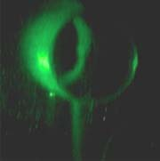

Hologram Scaling with Wavelength
|
 |
One of the unique properties of holograms is that the size of the viewed image scales with the wavelength of the viewing light. At left is a view of a hologram of the end of a pipe formed with light from a mercury vapor tube. The mercury source has three prominent wavelengths and you can see three distinct images of different size. Measuring the relative size of the images compared to the blue image (435.8 nm) gives 1.26 for the green (546.1 nm) and 1.36 for the yellow-orange image (576.9 and 579.1 nm). The scaling of the wavelengths relative to the blue wavelength gives 1.25 for the green and an average of 1.33 for the yellow-orange lines, so the image sizes appear to scale with the wavelength.  The lower image shows the same hologram viewed with the mercury source filtered by an interference filter which transmits only the mercury green line. |
The direct viewing of a hologram with mercury light illustrates a unique feature of the blue vision of the human eye compared to that for red and green. Because of distinctions with the blue cones of the eye and a bit of chromatic aberration in the eye, the blue image will look less distinct than the green and orange image. The effect must be viewed directly; the way the image is made in this illustration mixes in enough other colors to remove the effect.
| More hologram images with mercury source |
Holography concepts
Laser concepts
| HyperPhysics***** Quantum Physics ***** Optics | R Nave |